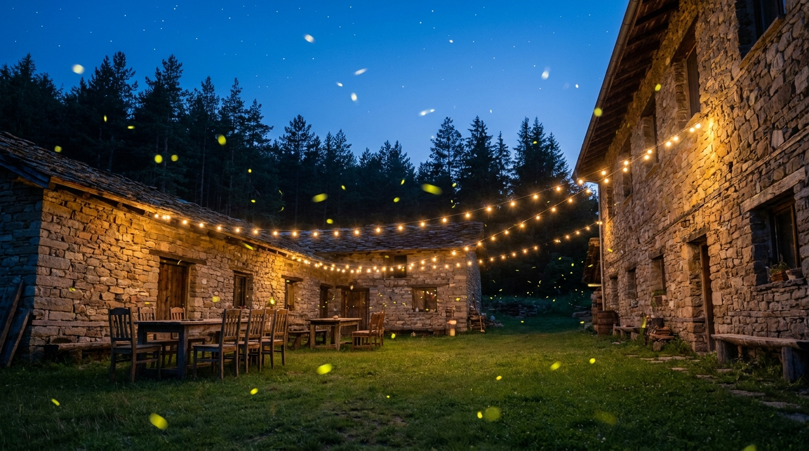

01 — Историята зад името
Защо я наричаме
Светулките?
Има едно поверие в Еленския Балкан — там, където въздухът е най-чист и реката шепти най-тихо, нощта си има свои малки фенери. Всяко лято, щом падне здрач над двора на нашата къща, измежду тревата и старите ябълкови дървета припламват десетки светулки. Гостите спират разговора по средата на изречението. Децата затаяват дъх. И някой винаги пита: „Това истина е, нали?“.
Истина е. Кръстихме къщата на тях, защото за нас тя е точно това — малка светлинка сред голямата тъмна гора, място, където се прибираш и спираш да бързаш.
Зад каменните стени и резбованите дървени тавани — възрожденски дух. Зад модерната кухня и чаршафите — съвременен комфорт. Между двете — нашето семейство, което пази тази къща от години и продължава да я разширява, стая по стая, за да приберем повече гости под общия покрив.
